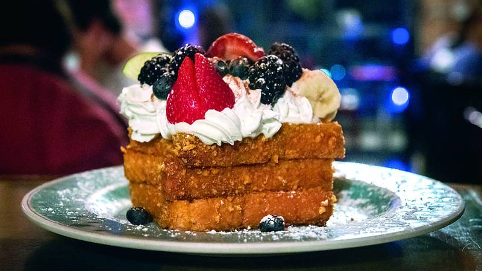

Cap'n Crunch French Toast

Description
If you ever wake up to this french toast, you'll think you're dreaming. They smell
incredible, taste delicious, and are hands down one of the best tasting breakfast foods
out there.
The twist on these is the Cap'n Crunch cereal they're coated in, making them sweet
and crunchy. Let's get to it!
Ingredients
Makes 4 to 5 servings!
-
3/4c heavy whipping cream
-
3 large eggs, lightly beaten
-
2tbsp sugar
-
3 cups Cap'n Crunch cereal*
-
8 to 10 thick slices of bread, such as Texas Toast or French bread
-
Butter for cooking
-
Whipped cream for topping
-
2 cups of assorted fresh seasonal berries
Directions
-
Mix the cream, eggs, sugar and vanilla in a large bowl and whisk until combined;
set aside.
-
Put the cereal in a storage bag and using a rolling pin, cruch the cereal until
it resembles cracker meal. Transfer the cereal to a shallow dish.
-
Dip the slices of bread into the cream mixture until soft but not completely soaked.
Let excess liquid drip off, then press into cereal crumbs to coat evenly.
-
Heat a large skillet or griddle over medium heat and add butter as needed.
-
Cook the bread until caramelized on both sides, about 6 to 8 minutes total.
-
Add a dollop of whipped cream on top and serve with berries.
*This recipe can be tweaked by using your favorite cereal in place of Cap'n Crunch! Enjoy!